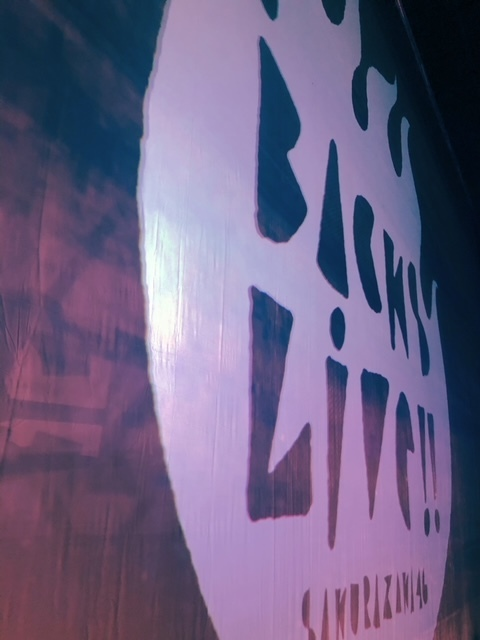
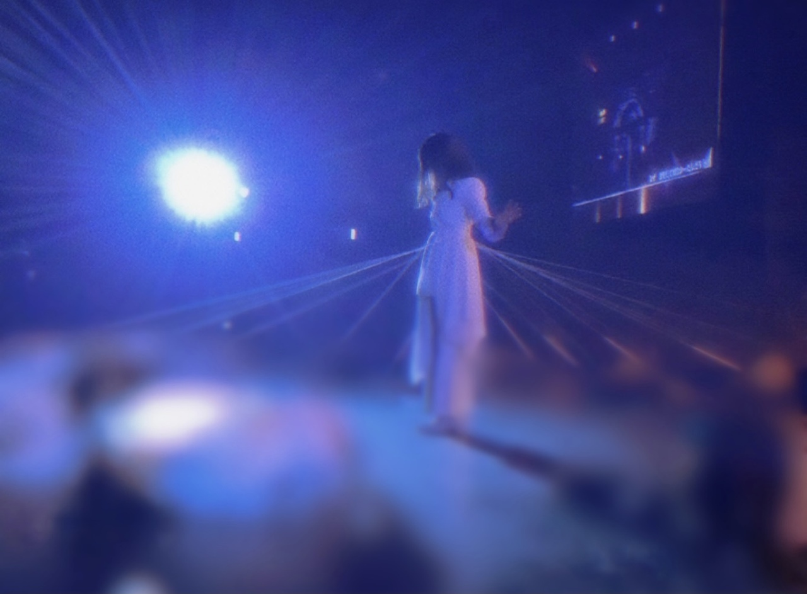
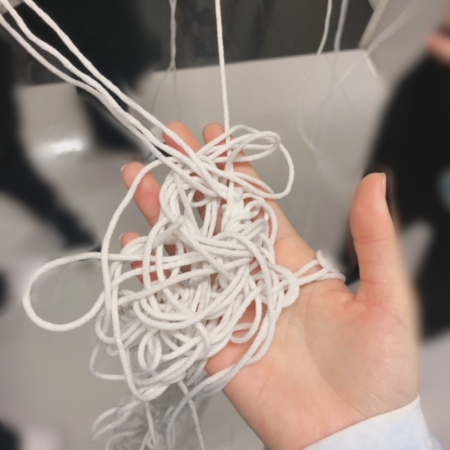
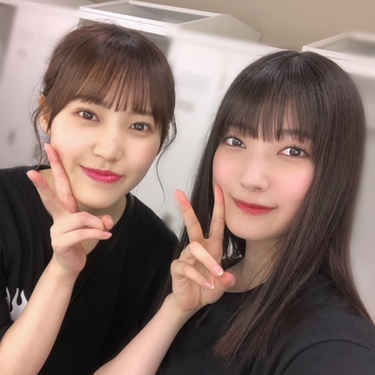
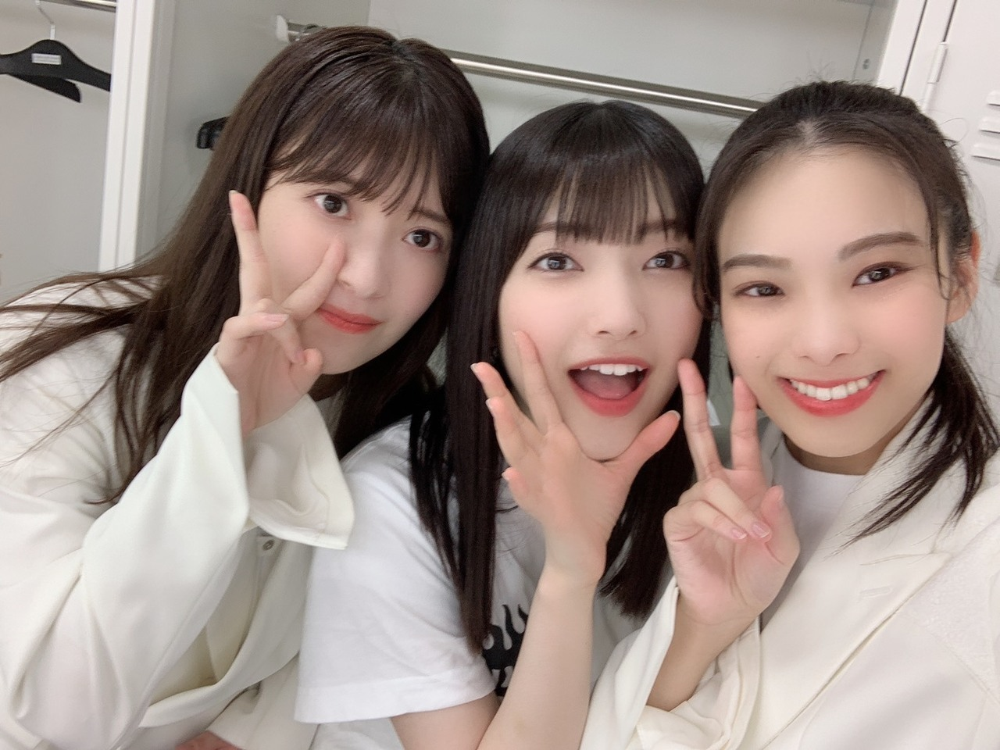
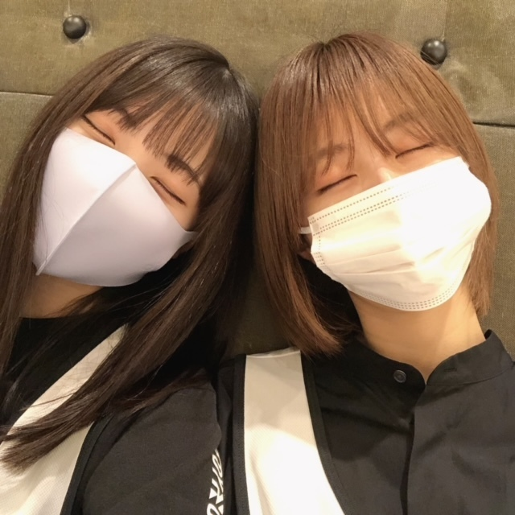
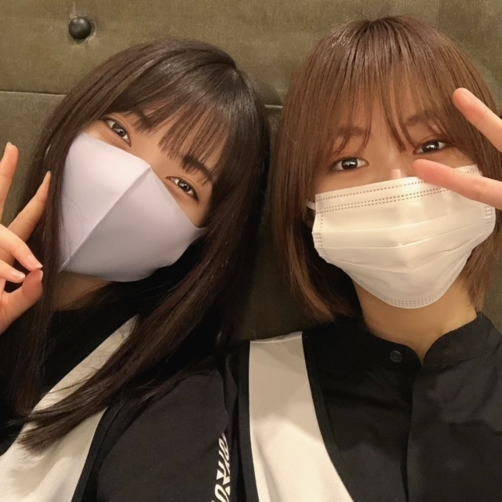

好きな気持ち
体が勝手に動いて
パフォーマンスに没入している感覚
その感覚が好きで楽しくて
その感覚にはやく辿り着きたくて
鏡と向き合った毎日
ライブが好き
ファンの皆さんが好き
メンバーが好き
楽曲が好き
表情を研究する時間が好き
パフォーマンスしてるときの感覚が好き
「好き」に理由はなくても、
「好きだから」は自分を動かす最大の理由

BACKS LIVE!!3日間ありがとうございました✨
配信を見てくださったみなさまもありがとうございました!!!
3日間で全大園玲タオルやうちわ、準備してくださったものを見つけた自信があります（キリっ）
ファンの皆さんと作り上げたきらきらの空間は
また一つの「好き」としてこの目に焼き付けました
この好きも、
これから私を動かす理由の一つになります

新しいなぜ恋だったなあと、記憶に残っていたら嬉しいです
糸はかける順番や位置、離すタイミングまで正確じゃないと絡まってしまって、、

3日間とも解くことができて、
不安がなくなるまで何度も検証してくださったり、絡まった紐を解いてくださったりしたスタッフのみなさん、メンバーに感謝の気持ちでいっぱいです
ありがとうございます!!!

MCありがとう✨

BACKS LIVE!!を通して、
自分の表現について
大事にとっておきたい言葉をたくさんいただきました
大事にします
🤍6月30日（水）17:40〜
テレ東音楽祭
🤍7月3日（土）15:00〜
THE MUSIC DAY
出演させていただきます、ぜひご覧ください✨
🤍8月7日（土）
ROCK IN JAPAN FESTIVAL 2021に出演させていただくことも決定しました✨
暑い熱い夏にしましょう
そして、『W-KEYAKI FES. 2021』の、3日目
7月11日（日）にオンライン配信されることが決定しました✨
🤍7月3日（土）〜配信チケット発売予定です!!!


BACKS LIVE!!で強くなりました
櫻坂46も強くします
大園玲